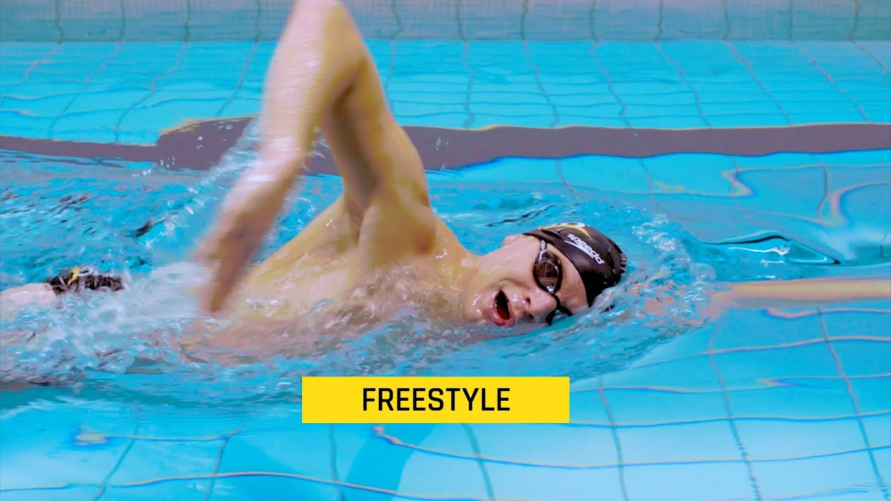
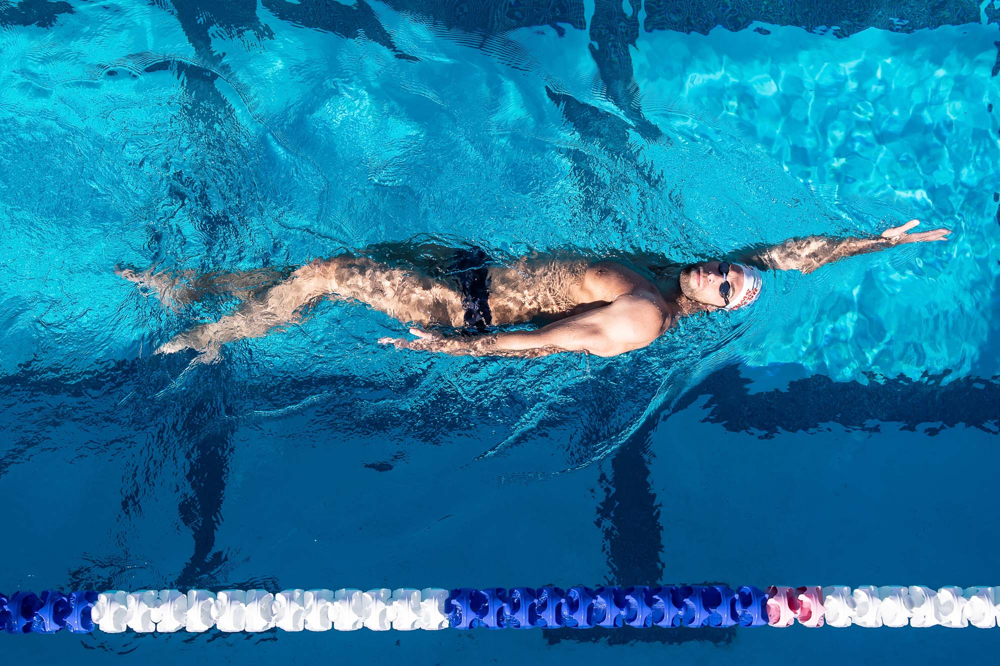
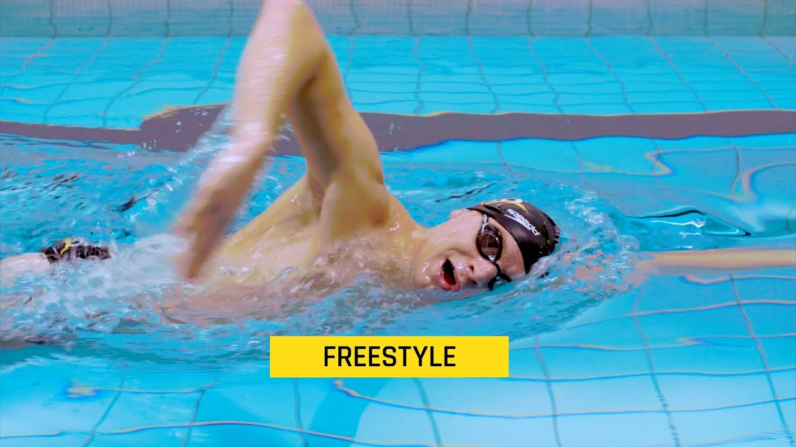
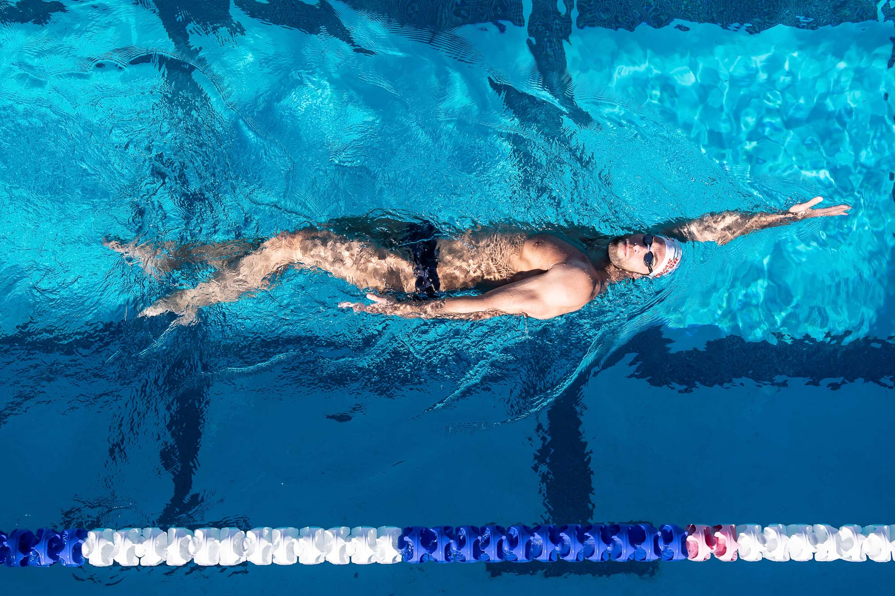

Competitive Swimming
Internationally, competitive swimming came into prominence with its inclusion in the modern Olympic Games from their inception in 1896. Olympic events were originally only for men, but women’s events were added in 1912. Before the formation of FINA, the Games included some unusual events. In 1900, for instance, when the Games’ swimming events were held on the Seine River in France, a 200-metre obstacle race involved climbing over a pole and a line of boats and swimming under them.
Swimming Styles
What Are the 4 Types of Swimming Strokes? Even if you haven't done any competitive swimming, you might have heard of the 4 main types of swimming strokes: freestyle, backstroke, breaststroke, and butterfly. Each stroke has its own unique approach, using the arms, legs, and torso differently.
 


